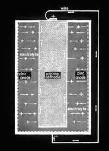

what is corrosion?
Corrosion of a steel tank or copper pipe is an electrical and chemical deterioration of the metal. It is sometimes called "electrolysis." It causes pits which leads to holes in one place but not in another. The electrical component of corrosion involves the movement of electrons across a metal surface like electricity flowing on a copper wire. Because of this, the corrosion rate can be measured in milliamps and is affected by resistance and voltage differences.
Electricity flows from a high voltage potential to a lower voltage potential much like water flows from a high elevation to a lower elevation. Electricity, like water, is affected by resistance and pressure.
All metals ha

ve energy stored within them relative to the amount of energy it took to create them from ore. Magnesium has the most energy stored within it. Zinc and aluminum have slightly less energy followed by steel then cast iron. lead, brass and copper have lower energy which causes them to be only mildly affected by the corrosion process. Carbon, a metal, and gold have the lowest energy levels of all the above metals. They all have a unique voltage that can be measured.If two different metals are placed in a substance such as water or soil that conducts electricity and connected together, you can measure an electric current that will flow from the metal with the most stored energy to the metal with the least stored energy. This is how batteries work. The illustration at right illustrates corrosion in a battery. The chemical component of corrosion involves the combination of water ions, oxygen and other negatively charged ions with positively charged iron to form iron oxide which we call rust. Dissolved salt and other minerals in water accelerate the rate of corrosion.
When a tank corrodes, the iron atoms break away from the steel surface. Over time, this leaves pits in the steel which eventually become holes. Corrosion occurs at an anode. Therefore, pits occur at anodic spots on the surface. Protection occurs at a cathode. Therefore, the unpitted areas are cathodic spots.
124 North 22nd Ct. Grand Junction, CO 81501 (888) 609-9766 toll-free
ANODE SYSTEMS COMPANY
© Copyright 1999-2015 Anode Systems Company